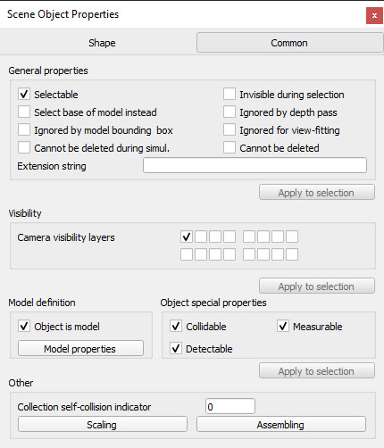
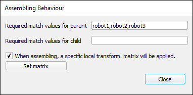

|

Object common properties
The object common properties dialog is part of the scene object properties dialog, which is located at [Menu bar --> Tools --> Scene object properties]. You can also open the dialog with a double-click on an object icon in the scene hierarchy, or with a click on its toolbar button:
[Scene object properties toolbar button]
In the scene object properties dialog, click the Common button to display the object common properties dialog. The dialog displays the settings and parameters of the last selected object. If no object is selected, the dialog is inactive. If more than one object is selected, then some parameters can be copied from the last selected object to the other selected objects (Apply to selection-buttons):

[Object common properties dialog]
Selectable: indicates whether the object can be selected in the scene. Objects can always be selected in the scene hierarchy. Refer also to the sim.setObjectProperty function.
Invisible during selection: when enabled, then the object will be invisible for the selection process (i.e. you will be able to select through the object).
Ignored by depth pass: when enabled, then the object will be ignored during the depth rendering pass. The depth rendering pass is used to correctly position the red sphere for camera movements.
Select base of model instead: if enabled, then selecting the object in the scene will select its first parented object marked as object is model base instead (see further down). This property is convenient when protecting a model from faulty manipulations, allowing it to be manipulated as a single entity together with other objects. Refer to the section on models and also to the sim.setObjectProperty function.
Ignored by model bounding box: when selected, and the object is part of a model, then the model bounding box (i.e. model selection bounding box) will not encompass that object. This is useful for invisible objects that might make the model bounding box appear too big. This property has no functional effect. Refer also to the sim.setObjectProperty function.
Ignored for view-fitting: objects with this item selected will not be taken into account when fitting a scene to a view while no object is selected. Usually floors and similar will be tagged as such. Refer also to the view fitting toolbar button and to the sim.cameraFitToView api function.
Cannot be deleted during simul.: when enabled, then the object will ignore a deletion operation when a simulation is running (deletion will however still work when triggered via code).
Cannot be deleted: when enabled, then the object will ignore a deletion operation (deletion will however still work when triggered via code).
Extension string: a string that describes additional object properties, mainly used by extension plugins (see also the sim.getExtensionString API function).
Camera visibility layers: each object in CoppeliaSim can be assigned to one or several visibility layers. If there is at least one visibility layer that matches the layer selection dialog layers, then the object will be visible when seen from a camera. By default, a shape is assigned to the first layer, a joint to the second layer, a dummy to the third layer, etc.
Object is model base: indicates whether the object should act as the base of a model. An object flagged as base of model has special properties (e.g. copying the object will also automatically copy all its hierarchy tree). Additionally, when such an object is selected, the selection bounding box is displayed as thick stippled lines, encompassing the whole model. Refer also to the select base of model instead item above. Additionally, a model will share a same identifier with all of its copies or clones. A model can then transfer its DNA (i.e. share an instance of itself) to all of its clones, via the transfer DNA toolbar button. Imagine having 100 same robots in your scene that you want to modify in a similar way: simply modify one of them, select it, then click the transfer DNA toolbar button.
[DNA transfer toolbar button]
Edit model properties: allows opening the model dialog.
Collidable: allows enabling or disabling collision detection capability for the selected collidable object.
Measurable: allows enabling or disabling minimum distance calculation capability for the selected measurable object.
Detectable: allows enabling or disabling proximity sensor detection capability for the selected detectable object.
Collection self-collision indicator: when performing collision (or minimum distance) calculations between two identical collections, CoppeliaSim will normally check all collection items against all other items in that collection. In some situation, such as a kinematic chain, one doesn't want to check consecutive links, since they might be constantly colliding at the interface. In that case, you can use the collection self-collision indicator: two items of a same collection will not be checked against each other if their indicator difference is exactly 1, 10, 100, 1000, 10000 or 100000, as can be seen on following figure:

[Collection self-collision indicators]
Scaling: objects or models can be scaled in a flexible way in CoppeliaSim. The size of an object or model, and all related properties are scaled appropriately (e.g. joint ranges, velocity settings, masses, etc.) so that the scaled object or model can normally continue to operate (but at a different scale).
Assembling: opens a dialog that allows to specify how the assembling toolbar button will handle the object during assembly (if objects are assembled in a different way than via the assembling toolbar button, then following settings will have no influence):

[Assembling behaviour dialog]
Required match values for parent: the object can be attached to another object (i.e. become another object's child), but only if one of the listed required match values for parent matches one of its new parent's required match values for child values. This feature is useful in order to set a fixture compatibility criteria (e.g. gripper A can only be attached with a robot that has a tooltip of type A).
Required match values for child: the object can have another object attached to itself (i.e. become another object's parent), but only if one of its required match values for child matches one of its new child's required match values for parent values. This feature is useful in order to set a fixture compatibility criteria (e.g. gripper A can only be attached with a robot that has a tooltip of type A).
When assembling, a specific local transform. matrix will be applied: if checked, then the object won't stay in place when assembled: a specific transformation matrix will be used as its new local transformation matrix. By default that matrix is the identity matrix, but you can specify a specific matrix by clicking Set matrix. This feature is useful in order to automatically position and orient an object correctly in relation to its new parent (e.g. in order to have a gripper automatically placed correctly at a robot's tooltip)
The object selection order is important for assembly operations, i.e. first select the to-become-child-object, then the to-become-parent-object. If the selection order is wrong, or if the to-become-parent-object is not appropriate, then CoppeliaSim will try to guess what the real intention of the user was (e.g. by searching for an appropriate match in the to-become-parent-object's descendents), if there is no ambiguity.
|